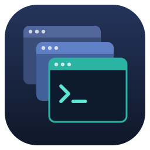
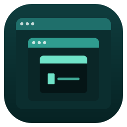
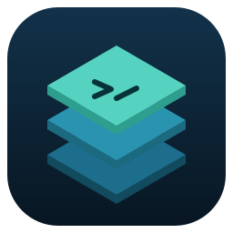
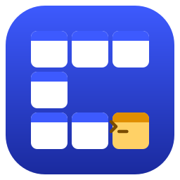
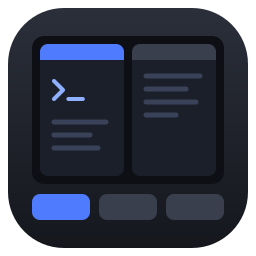
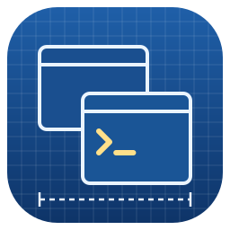
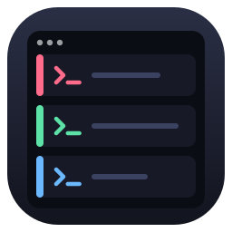
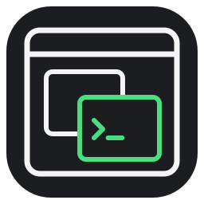

重なった3枚の子ウィンドウ。MDIの「重ねて表示」をそのまま図案化
親ウィンドウの中に4分割の子ウィンドウ。1枚がアクティブ

ウィンドウの中のウィンドウ。親子関係を3段で表現

等角投影で積み重なったウィンドウ層。複数画面を立体で表現

7枚の小ウィンドウで頭文字「C」を組んだロゴ型

左右分割の子ウィンドウと下部のタブ列（ストリップボタン）

方眼の設計図に描いたウィンドウ群。「craft＝組み立てる」の意

上下に並べた3つのターミナル。別々のセッションを色で区別
扇状に広げたウィンドウ。切り替えながら複数を扱う様子

単色の線だけで親枠と重なる子ウィンドウを描いたシンプル案